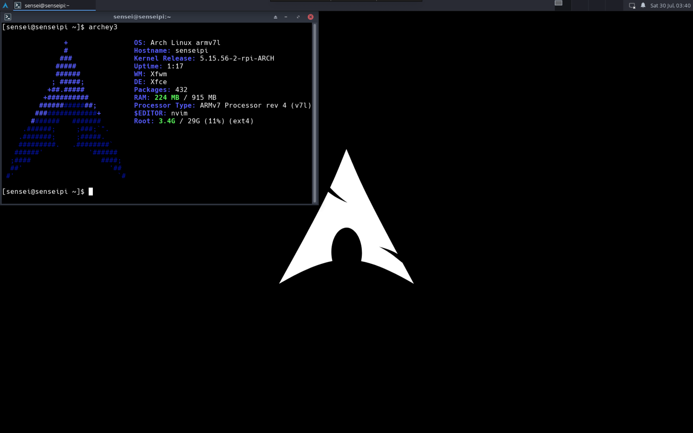

The Arch Linux Journey
Posted on Sun 07 August 2022 in Programming
For the upcoming semesters, we have a ton of systems courses. So, I needed a linux box that I could hack around, preferably at the kernel level. I finally got around to installing Arch Linux on a Raspberry Pi1: Here's how I did it.
Context
For starters, I already use linux/unix systems quite a bit. The real need for a linux system became apparent last semester, when one of our courses needed a program that would run only on Windows/Ubuntu. I got around this by running a VM on my 6 year old, 128GB mac sobs. While definetly a suboptimal solution, for the upcoming courses (networks, parallel programming, OS), a core linux machine would be a neccessity.
Before you pick up your pitchforks, yes, RPi is ARM based: I know this is a completely different ballgame from CISC i386/x86-64 processors, which is also partly the reason I wanted linux on an ARM machine: we did ARM assembly in the previous course, so that'll make this easier? idk I'm bad at CS
Baby Steps
So why arch?2 Well, the biggest reason is learning: learning to setup arch and use it would teach me more about UNIX fundamentals than using a prebuilt OS. And in the span of less than half a day, I've used atleast 6 utilities I've never seen or heard of before. So yeah, if you enjoy the hike a steep learning curve gives you, arch is perfect.
Installation
Installation was fairly straightforward: NOOBS doesn't ship with an option to get arch, so PINN was used. Remember to download it from GitHub rather than from SourceForge: SourceForge mirrors are garbage, while the GitHub one downloads in under a minute.
After getting PINN, just point-and-click to install arch.
And that's it!
Btw I use arch
Ok, I lied. Arch ships with nothing, and I mean nothing
- No windowing server
- No desktop environment (by extension)
- No setup screen
All these are forgiveable (and quite common on server distros), but then we have:
- No man pages. Seriously?
- No
sudo - No keychains set up
- No drivers for Bluetooth, or Wifi set up
Fortunately, the ARM arch ships with a few more things: netctl, X11, and wifi drivers. And a SSH server running by default. The best way of setting up is to connect to your router via ethernet, then do an arp-scan --localnet (on mac, install with brew install arp-scan) to find the ip, ssh on, and get rolling (default user alarm, password alarm and root password is just root)
Connecting and basics
- Plug in your Pi to ethernet, and use your WiFi router settings page to see all connected devices. From there, note down your pi's IP and ssh on to it.
- use
timedatectlto see if the system clock is accurate:
timedatectl set-ntp true
use timedatectl status for information.
- Set up the timezone:
ln -sf /usr/share/zoneinfo/Asia/Kolkata /etc/localtime
hwclock --systohc
- generating locales: edit
/etc/locale.genand uncommenten_US.UTF-8. Generate locales by runninglocale-gen. Then, create thelocale.conffile and setLANGappropriately (I set it toen_US.UTF-8) - Edit the hostname from
alarmpito something better, likesenseipi:)
Setting up pacman and certificates
Now that you're on the pi with a connection, the first thing to do is to setup pacman. This needs certificates: since Arch is a rolling distro, there's a very rigorous signature process in place for packages, and the system by default won't install packages which are not signed by trusted certificates in the keychain.
Setting this up on ARM is slightly different compared to a normal arch system (or so I found):
pacman-key --init
pacman-key --populate archlinuxarm
pacman-key --refresh-keys
After that, pacman -Syy and pacman -S archlinux-keyring. Will install a couple dependencies as well.
You're now ready to run
pacman -Syu
to update and upgrade everything on your system.
Wifi setup
Just use wifi-menu, don't bother with anything more complicated. You'll also need to create a service to start wifi automatically on boot, by doing:
systemctl enable wpa_supplicant@wlan0
systemctl start wpa_supplicant@wlan0
After this and rebooting, I was able to ssh onto my pi, by connecting it to my mobile hotspot. This is still my primary means of using my Pi. One important thing to note: Don't try switching to NetworkManager without a working display and ethernet connection. I tried doing this, only to blow the network setup on my Pi, because once you set up the NetworkManager service, it would take over wlan0 on boot and because it didn't know the wifi configuration, it would never connect to the network, so I couldn't SSH/VNC onto it. After a lot of repeated tries, wpa_supplicant finally launched before NetworkManager on one boot, allowing me to ssh on and disable NetworkManager for good.
Users, sudo and User Groups
- Create your new user
- ssh on as your new user, and su to root
- delete the old user
- install sudo:
pacman -S sudo visudothe sudoers file to give the wheel group access to sudo- add your user to the wheel group
- run
id <username>to verify you're added to the right groups
Other software
- utilities:
sudo pacman -S man-db man-pages nvim htop tree- run
mandbto generate the man database export EDITOR=nvimin your.bashrc
- run
- yay
- install git:
sudo pacman -S git - go to /opt
- clone https://aur.archlinux.org/yay.git there
- needed to set a proxy for this:
git config --global http.proxy ""
- needed to set a proxy for this:
- chown to our user
- make the package with
makepkg -si - had to install base-devel for this:
sudo pacman -S base-devel(install everything, most of them are useful)- go was not installing, surprisingly go-2:1.19-1 was updated on Aug 3 itself and I hadn't done
pacman -SyyReiterated the importance of keeping my package lists updated in a rolling release distro. makepkgwas surprisingly straightforward thereafter
- go was not installing, surprisingly go-2:1.19-1 was updated on Aug 3 itself and I hadn't done
- add colors:
sudo nvim /etc/pacman.conf, uncomment the Color line
- install git:
- GUI stuff
- installing fonts
yay -S ttf-roboto ttf-opensans ttf-roboto-mono ttf-ubuntu-font-family ttf-dejavu ttf-hack ttf-liberation
- install Xorg stuff
yay -S xorg-server xorg-xrefresh(install libglvnd)yay -S xorg(install everything)yay -S xtermyay -S xfce4yay -S arc-gtk-theme arc-icon-theme
- installing fonts
- TigerVNC
yay -S tigervnc- edit your vnc config and set a vnc password with
vncpasswd, then runvncserver. Also, add this as a system service so that it starts on boot
To come
Congratulations: if you don't have a working system by now, atleasy you would have enough confidence to take your system in the direction you want to take it now. Here's a snap of how mine looks like after I was done with setup:

References
- Arch Linux Installation guide
- Arch Linux General Recommendations
- Gist on RPi Arch setup
- Instructable on Arch on RPi
- Too many arch linux forums threads to count.
Footnotes
1 Finally, a tech article! Reading the previous articles, it personally seemed a bit sad that what started out as a STEM blog is now basically me masquerading as Kalpit Veerwal or some armchair IITian celebrity, sans the obnoxious YouTube channel (the most viewed article on this blog is my JEE journey :'( ) This sucks, but is easily changeable. Since I write about what I do, the solution is to just do more tech :P
2 In the middle of intern interview season and wrapping up my SURA, only a masochist would do this to himself